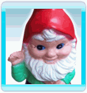

Cuando se juega en modo aventura, Follie explora
Elilia - el misterioso planeta
donde se ha estrellado.
Mueve a Follie desde el lugar resaltado apuntando el mando de Wii hacia la pantalla y presionando el Botón A.
Si Follie no puede llegar a algún lugar, el cursor se volverá rojo.
A medida que explora, Follie encontrará diferentes objetos, personajes y lugares:
- Lugares de plantación:

Cada uno de estos sitios indica la ubicación de un nuevo nivel.
Antes de que un nivel pueda ser jugado por primera vez, el jugador tiene que poseer las semillas adecuadas.
Explora la plantación para descubrir que semillas necesitas. Una vez el nivel ha sido completado, puede ser jugado cualquier cantidad de veces
(ninguna semilla extra es necesaria). Un nivel completado otorga nuevas semillas al jugador y una Calificación de Estrella de 1 a 5.
- Gnomos problemáticos:
Estos molestos e inútiles gnomos bloquean el progreso de Follie cuando ella está explorando. Follie usa sus Poderes Estrella para calmarlos, permitiéndole pasar. El valor que se muestra en cada gnomo es la cantidad mínima de Poderes Estrella que Follie necesita para calmarlo. Párate junto al gnomo para que puedas calmarlo.
- Semillas de Flowerwork:

Estas semillas se dispersaron en el momento de la colisión.
Recolecta las semillas para plantar Flowerworks en lugares de plantación,
y gana acceso a un nuevo nivel. Cuando Follie completa un nuevo nivel, ella será premiada con semillas adicionales.
- Pistas:

Mientras que Follie explora el mundo, se cruzará en el camino con señales y pistas.
Estas proveen nuevas estrategias y trucos para el juego, y también
revelan la historia y secretos de Elilia. Jugadores experimentados pueden
apagar las pistas desde las opciones del menú.
- Locales:

Ocasionalmente Follie se encontrará con un habitante local de Elilia. Ellos ofrecerán a Follie valiosos consejos, y pueden venderle una nueva habilidad (por intercambio de monedas). Párate de frente del local para hablar con el.
- Monedas:
Colecta las monedas que están dispersas por el mundo caminando sobre ellas. Si conoces a un local, ellos te ofrecerán una habilidad a cambio de monedas.